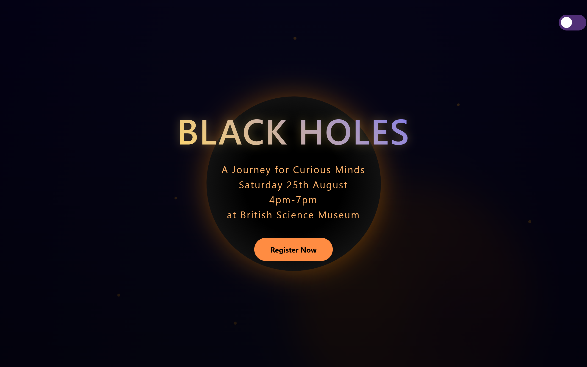
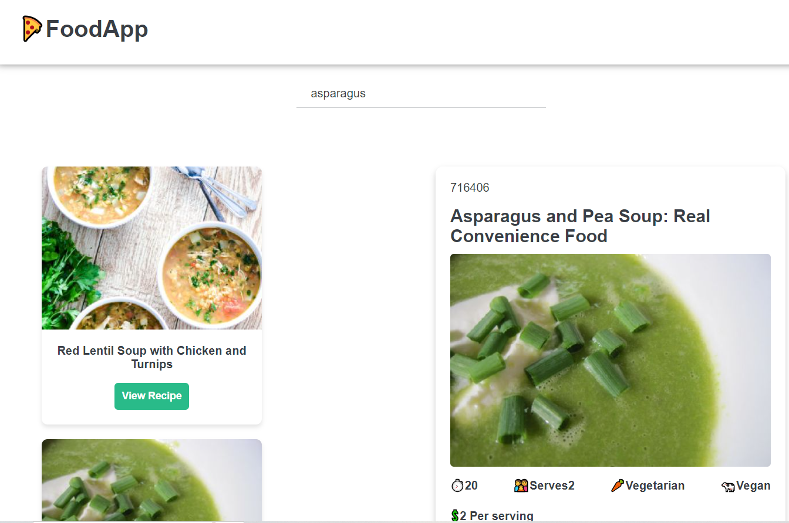
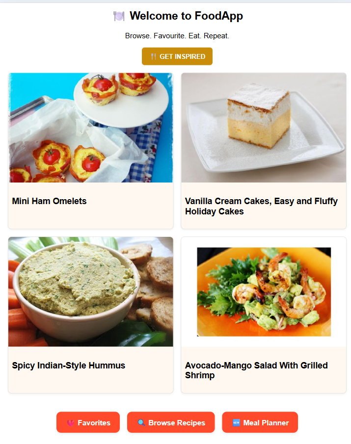
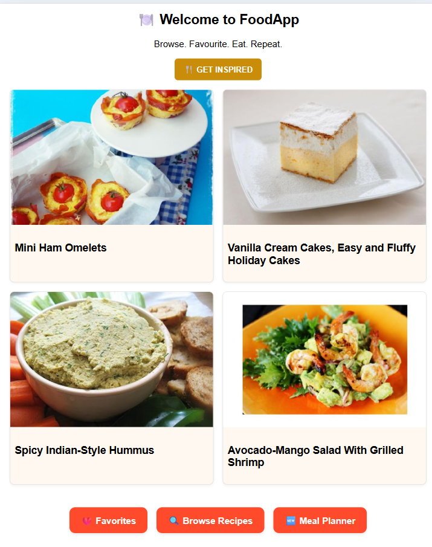

Selected Projects
Projects that blend thoughtful UI, accessibility, and clean engineering. Each one reflects my approach to building intuitive, emotionally engaging digital experiences.
Building clean, accessible, user-centered interfaces that feel effortless.
I build intuitive, scalable interfaces- and translate complex ideas into simple, user-friendly solutions.
Projects that blend thoughtful UI, accessibility, and clean engineering. Each one reflects my approach to building intuitive, emotionally engaging digital experiences.
Wellness e-commerce website

Full Stack Developer
3 months
React, JavaScript, Express.js(Data endpoints), Supabase(database), Cloudinary(Cloud storage),Render(deployment), Netlify(hosting)
UI engineering, Front-end development, responsive layout, database integration, accessibility
A closer look at how I approached the challenge, shaped the user experience, and built the final interface — from early ideas to polished execution.
Existing wellness websites were often cluttered and overwhelming. The challenge was to design a calming interface that allows users to track their well-being effortlessly and provide positive shoping experiance.
I analyzed user feedback and identified the need for intuitive, easily interpretable wellness data with minimal cognitive load.
I opted for a soothing color palette, generous whitespace, and clear visual hierarchy to keep focus on key wellness products. Components were designed to be reusable and responsive. Products ware automated betwean the database and the front end interface.
I implemented dynamic data handling with the wellness API, optimized component rendering, and ensured keyboard navigation and screen reader support across all interactive elements.
The final product offers a tranquil, focused user experience. I deepened my knowledge of accessible design, refined my approach to state management with React hooks, and improved how I structure reusable UI components for scalability.
Landing Page
Front-end Developer
1 month
HTML, CSS, JavaScript, Animations
UI engineering, Front-end development, responsive layout
A closer look at how I approached the challenge, shaped the user experience, and built the final interface — from early ideas to polished execution.
The British Science Museum was struggling to attract attendance to their family‑friendly events and needed a web solution that would increase customer engagement and raise awareness of their space‑themed activities.
I analyzed user feedback of people attending similar events and identified the need for intuitive interactive similar as live event landing page that they can add to their website.
I designed the interface using a dark cosmic palette, blending deep blue and soft black to create an immersive atmosphere. Generous whitespace and a strong visual hierarchy guide the user’s attention through each section. The hero section recreates the look of a real black hole to spark curiosity — particularly for families exploring the site together. Even the subscription form plays into the theme, with elements that appear to slip beyond the event horizon.
The technical challange involved constructing the animation simulation to mimic the black hole event experiance.
The final product offers a tranquil, focused user experience. I deepened my knowledge of CSS animations, refined my approach design requirements.
Web Application
Front-end Developer
2 months
React, JavaScript, Github, Vite
UI engineering, Front-end development, responsive layout
A closer look at how I approached the challenge, shaped the user experience, and built the final interface — from early ideas to polished execution.
Busy families and proffesionals strugle to cook healthy meals and lack of receipt ideas.
I analyzed user feedback of working families and identified the need for meal receipts and provide ideas for cooking receipts based on ingredients they have at home.
 

A short screenshots demonstrating mobile responsiveness.
I designed the interface using a warm supportive colours, to create an wellcoming atmosphere. Generous whitespace and a strong visual hierarchy guide the user’s attention through each section. The hero section. The app allows selecting receipts acording to ingredients searches and categories for dietary requirements. Despite most functionality is implemented some are still not and in process of development.
The technical challange involved learning to work with an API resources.
The final product offers useful user experience but it is still in process of refine.